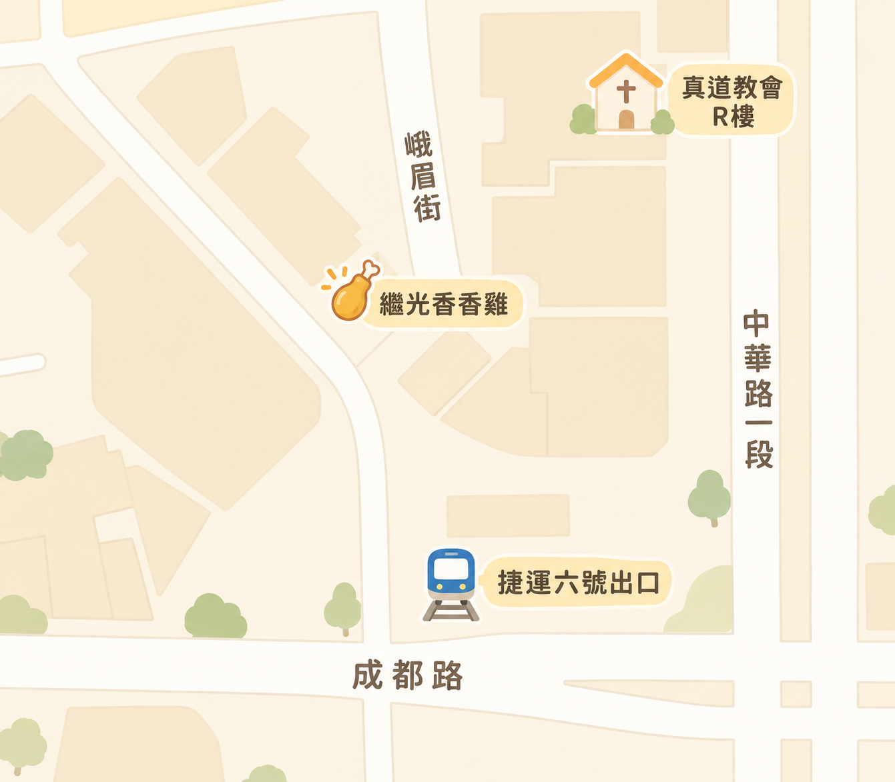

主日學資訊
基本資訊
- 聚會時間
- 每週日09:30–11:30
- 地點
- 真道教會R樓（臺北市萬華區中華路一段144號R樓）
- 捷運
- 捷運西門站 六號出口
- 對象
- 幼兒班 3–6 歲｜小學班 7–12 歲

📍 Google 地圖第一次來，怎麼進行
- 到報到處，告訴老師孩子的名字
- 填寫孩子的基本資料與緊急聯絡方式
- 老師帶孩子進入主日聚會會堂
- 聚會結束後，憑簽到記錄接回孩子
主日學會做什麼
- 敬拜與律動：用歌曲和動作認識神。
- 故事與分享：依年齡設計，孩子聽得懂、記得住。
- 小組與活動：透過遊戲與分享，建立朋友與信任。
- 課程與學習：不定時的用活動帶領孩子學習好品格好技能。
分班
幼兒班
3-6歲
透過唱跳、繪本故事與簡單手作，引導幼兒認識信仰與建立良好品格。
小學班
7-12歲
透過互動式課程、主題討論與小組活動，讓孩子在感受中認識信仰，同時培養獨立思考與團隊合作。
需要幫忙嗎？
有任何問題，歡迎聯絡電話陳老師 0920-459-863，或到現場詢問老師。